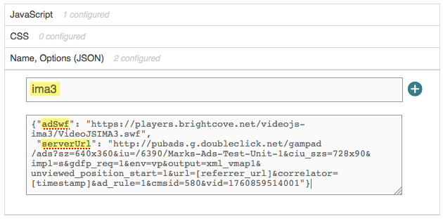

IMA Plugin Guide
The IMA plugin integrates the Brightcove player with Google's Interactive Media Ads (IMA) for HTML5 version 3. This allows you to request and track VAST ads for your player.
For details about Google IMA, see the Using the IMA HTML5 SDK Version 3 document.

For a quick introduction to using plugins, take the Quick Start to Player Management.
For a detailed look at plugin development and use, check out the Quick Start to Plugin Development.
Using the plugin
As shown in the Quick Start to Player Management, to implement a plugin the player configuration needs to know the location of the plugin code, a stylesheet if needed, and the plugin name and plugin configuration options. The location of the plugin code and stylesheet are as follows:
- http://players.brightcove.net/videojs-ima3/videojs.ima3.min.js
- http://players.brightcove.net/videojs-ima3/videojs.ima3.min.css
The plugins are versioned, and the URL given will always contain the latest version. The versioned instances are also available, for instance http://players.brightcove.net/videojs-ima3/1.2.0/videojs.ima3.min.js - most users will not need to worry about versions as you will just want the latest one.
The name of the plugin is ima3, and an example set of options is:
You can associate the plugin with a player, and all child instances of that player, using a curl statement. You can also use the embed_in_page code and associate the plugin with just one instance of a player. Examples of both follow.
Associate plugin with all instances of a player
It is a best practice to use the iframe player implementation. This will associate the IMA plugin with a player and all child players.
In Video Cloud Studio, you can easily add plugins and options to your player.
Navigate to your player in Video Cloud Studio and edit the Plugins section.
Expand the JavaScript section and enter the URL for the plugin's JavaScript file.
Expand the CSS section and enter the URL for the plugin's CSS file.
Expand the Name, Options (JSON) section. Enter
ima3as the plugin name along with theadSwfandserverUrloptions.Copy the iframe Embed Code for the published player, paste it in your page code and run it in the browser. You should see your ads play along with the main video.



Use the HTTP PATCH method to update your player with the IMA plugin.
Copy the iframe code, paste it in your page code and run it in the browser. You should see your ads play along with the main video.
Your page code should look something like this:
Associate plugin with one player instance
Use the embed-in-page implementation to associate the IMA plugin with a single instance of a player.
Update your page code as follows:
- Line 38: Uses a
linktag to include the plugin's CSS in theheadof the HTML page. - Line 40: Gives the
videotag anidattribute, with some value, in this case video. - Line 47: Uses a
scripttag to include the plugin's JavaScript in thebodyof the HTML page. - Line 54: Creates a reference to the player.
- Lines 57-60: Initialize the plugin and pass in custom options.
The rest of this document details options and advanced user options for the plugin.
Options
The video.js IMA3 plugin is built on top of the video.js ads framework and accepts any options that the ad framework provides. Take a look at the ad framework README for details on the current set of overrideable settings. Both the IMA plugin specific options and ad framework options are documented here.
ima3SdkSettings
Type: object Default Value: undefined
If provided, the properties of this object are used to set the page-level Ima3SdkSettings when the IMA SDK has finished loading. The properties of this object are expected to be the camel-cased equivalent of setter methods on the SDK settings object, minus the 'set' prefix. For example, if you provided this object when initializing the plugin:
{
'numRedirects': 3,
'ppid': 'publisher-id',
}
Then the video.js IMA plugin would run code that looks something like this when IMA had loaded:
window.google.ima.ImaSdkSettings.setNumRedirects(3);
window.google.ima.ImaSdkSettings.setPpid('publisher-id');
adTechOrder
Type: array
Default Value: ['html5', 'flash']
The ad integration technologies to attempt to use, in order of descending precedence. videojs-ima3 will test each ad tech in order on initialization and use the first supported one for the lifetime of the player.
adControlBar
Type: object
Default Value: identical to the player control bar options
When using the Flash ad tech, a separate set of controls are created to manage interaction with the ad SWF. When those controls are created, these options will be used during their initialization. If no value is specified, the configuration settings for the regular control bar will be used.
adSwf
Type: string
Default Value: videojs.ima3.swf
The path to the videojs IMA3 swf. This will be directly applied to the object element if the Flash ad tech is used.
clickTrackingElement
Type: HTMLElement Default Value: undefined
If the HTML ad tech is being used in custom ad playback mode, this specifies an alternative HTML element to be used to track advertisement taps on devices that don't support input events over the video element. More details are available in the parameter documentation for the IMA AdDisplayContainer. If you provide a click tracking element, it is your responsibility to show and hide it at the appropriate times on the appropriate platforms. In most cases, it's best to leave this setting undefined and allow the the plugin and IMA to manage ad interaction.
timeout
Type: number Default Value: 5000
The maximum amount of time to wait, in milliseconds, for an ad implementation to initialize before playback. If the viewer has requested playback and the ad implementation does not dispatch the adsready event before this timeout expires the content video will begin playback. It's still possible for an ad implementation to play ads after this waiting period has finished, but video playback will already be in progress.
This option is part of the ad framework is configured as follows:
player.ads({
timeout: 5000
});Once the ad plugin starts waiting for the adsready event, one of these things will happen:
- Integration ready within the timeout: This is the best case, preroll(s) will play without the user seeing any content video first.
- Integration ready, but after timeout has expired: Preroll(s) still play, but the user will see a bit of content video.
- Integration never becomes ready: Content video starts playing after timeout.
This timeout is necessary to ensure a good viewer experience in cases where the ad implementation suffers an unexpected or irreparable error and never fires an adsready event. Without this timeout, the ads plugin would wait forever, and neither the content video nor ads would ever play.
If the ad implementation takes a long time to initialize and this timeout is too short, then the content video will begin playing before the first preroll opportunity. This has the jarring effect that the viewer would see a little content before the preroll cuts in.
In internal Brightcove testing it was found that five seconds seemed to be long enough to accommodate slow initialization in most cases, but still short enough that failures to initialize didn't look like failures of the player or content video.
prerollTimeout
Type: number Default Value: 100
The maximum amount of time to wait for an ad implementation to initiate a preroll, in milliseconds. If readyforpreroll has been fired and the ad implementation does not call startLinearAdMode() before prerollTimeout expires, the content video will begin playback. The prerollTimeout option is cumulative with the standard timeout parameter.
This option is part of the ad framework is configured as follows:
player.ads({
prerollTimeout: 100
});Once the ad dispatches the readyforpreroll event one of these things will happen:
startLinearAdMode()is called within the timeout: Preroll(s) will play without the user seeing any content video first.startLinearAdMode()is never called: Content video plays without preroll(s).startLinearAdMode()is called, but after the prerollTimeout expired: Bad user experience; content video plays a bit, then preroll(s) cut in.
The prerollTimout should be as short as possible so that the viewer does not have to wait unnecessarily if no preroll is scheduled for a video. Make this longer if your ad integration needs a long time to decide whether it has preroll inventory to play or not. Ideally, your ad integration should already know if it wants to play a preroll before the readyforpreroll event.
debug
Type: boolean Default Value: false
If debug is set to true, the ads framework will output additional information about its current state during playback. This can be handy for diagnosing issues or unexpected behavior in an ad integration.
This option is part of the ad framework is configured as follows:
player.ads({
debug: true
});HTML5 settings
If the HTML5 ad tech is in use, a number of IMA settings are available on the plugin object at runtime. For instance, to determine the ad ID you you would use:
var adId = player.ima3.currentAd.getAdId();Be careful interacting directly with these properties. Calling the wrong method can lead to unexpected results and failure of advertisements to play properly.
adsManager
Type: google.ima.AdsManager
The object responsible for playing ads. See ima.AdsManager. The Ads Manager is not available until adsready has been fired by the plugin.
currentAd
Type: google.ima.Ad
When an ad is playing, an object that encapsulates information about the current ad. See ima.Ad.
adDisplayContainer
Type: google.ima.AdDisplayContainer
The object responsible for managing the display elements for ads. See ima.AdDisplayContainer. The Ads Display container may not be available until adsready has been fired by the plugin.
adsLoader
Type: google.ima.AdsLoader
The object used to create ads requests. See ima.AdsLoader. The Ads Loader may not be available until adsready has been fired by the plugin.
Events
The plugin emits some custom event types during loading, initialization, and playback. You can listen for IMA3 and ad framework events just like you would any other event:
player.on('ima3error', function(event) {
console.log('event', event);
});
ima3error
This event indicates there was an error loading the IMA3 SDK from Google. If it occurs, no ads will be displayed.
ima3-ad-error
An error has occurred in the IMA3 SDK. You should verify your ad configuration and settings to be sure your DoubleClick account is correctly configured. You can find common troubleshooting tasks at the DoubleClick support site or talk to your DoubleClick account representative.
adstart
This event indicates the player has entered linear ad playback mode. This event is fired directly as a consequence of calling code. This event only indicates that an ad break has begun. The start and end of individual ads must be signaled through some other mechanism.
adend
This event indicates the player has returned from linear ad playback mode. This event is fired directly as a consequence of calling startLinearAdMode(). Note that multiple ads may have played back between the adstart and adend events.
adtimeout
This event indicates a timeout managed by the plugin has expired and regular video content has begun to play. Ad integrations have a fixed amount of time to inform the plugin of their intent during playback. If the ad integration is blocked by network conditions or an error, this event will be dispatched and regular playback resumes rather than stalling the player indefinitely.
Playback modes
The IMA3 HTML5 SDK has two seperate modes of operation: standard and custom playback mode. In standard mode, IMA3 will create a video element inside of the AdDisplayContainer iframe to play linear ads. Custom playback mode shares the video element with the content player and is intended for mobile devices that do not support multiple simultaneous video elements well. The videojs-ima3 plugin chooses which HTML5 playback mode to use by querying the content player's techOrder property and determining if any of the other content techs are supported. If multiple techs are supported, sharing the content video element isn't safe because it would be disposed if the current tech is unloaded. In practice, this means desktop machines with Flash installed will operate in standard playback mode and mobile devices without Flash will use custom playback mode.
HTML Mode/Firefox
Unlike the rest of the major browsers, Firefox does not yet support MP4 video on OS X. If you plan on adopting an HTML-first ad policy on Firefox, you'll need to make sure your ad creatives are available in a format that is supported natively, like .webm or ogv.
Click handling
The IMA3 ad display is overlaid on top of the video player during playback. By default, that would prevent click or touch events from reaching the player. This is not normally desirable so the default CSS only allows pointer events to reach the IMA SDK when at least one of the following conditions is true:
- When the flash ad tech is active and an ad is playing
- When the user's browser does not support touch events, the HTML ad tech is active and an ad is playing
- When the the user's browser supports touch event, player controls are visible and an ad is playing
Known issues
Supported environments
To check for supported combinations of platforms, advertising standards and video media, see Google's Video Feature and SDK compatibility document. That document and the Video Suite Inspector will help you diagnose attempted IMA3 advertisement configurations that simply will not function.
Note: To use the Video Suite Inspector you will need your VAST ad tag or VAST ad response. You can then paste it into the given text field and then click the Test Ad button.
Resizing the Player During Ad or Video Playback
If the player is resized during ad or video playback, ad content will not resize unless the player's dimensions function is called to resize the player. Resizing the player using other methods (style width and height, for example) will not resize the ad.
Exceptions Generated by Overlay Ads
On Chrome 30, an exception is thrown from the IMA bridge when "fading out" an overlay ad:
Uncaught NotFoundError: An attempt was made to reference a Node in a context where it does not exist. bridge3.1.33.html:46
ae bridge3.1.33.html:46
Pi.I bridge3.1.33.html:121
(anonymous function) bridge3.1.33.html:93
This issue is evident in the IMA VAST inspector as well.
Overlays and Fullscreen Transitions
video.js uses the fullscreen API where available. Different browsers implement the transition to fullscreen differently and that can produce discrepancies in appearance when transitioning into and out of fullscreen mode. In most implementations, the element that is being taken into fullscreen is geometrically scaled (i.e. zoomed) from its original to the target size. Most overlay advertisements are designed to be displayed at a fixed size, however, and so they may appear distorted until the animation completes.
Midrolls and live streams
Midrolls play immediately if they are configured for live streams.
Control bars
You will see that the advertisement and video that plays after advertisement completion can have different control bars. IMA creates a separate video element under most circumstances and exposes information about the ad playback state through non-standard methods. The control bar in the Brightcove Player is associated with different playback technology, and it is non-trivial to have the same control bar for both technologies.
Skippable ads on iPhones
Skippable ads are not supported by IMA3 on iPhones.